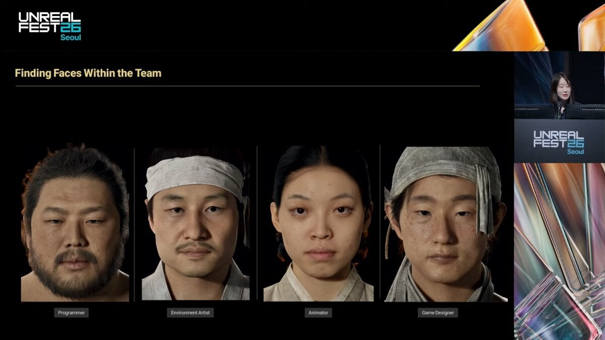
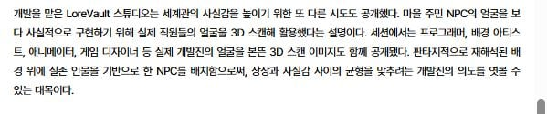

131 · 3 · 13 시간 전 · 원문


조선시대의 리얼함을 표현하기위해 개발진들 얼굴을 반영함
세번째분 다크서클ㅜ ㅋㅋㅋ
다들 묘하게 정겨움
수집 당시 댓글 3개
진정한이시대의야인 · 9 시간 전
쥐드립넷 · 7 시간 전
ㅋ 커 ㅋㅋㅋㅋ좋은데
12612 · 41 분 전
와 다라이 살벌하네 ㄷㄷ 저러고 어케 살아가냐
댓글
수집 당시 댓글 3개
진정한이시대의야인 · 9 시간 전
쥐드립넷 · 7 시간 전
ㅋ 커 ㅋㅋㅋㅋ좋은데
12612 · 41 분 전
와 다라이 살벌하네 ㄷㄷ 저러고 어케 살아가냐